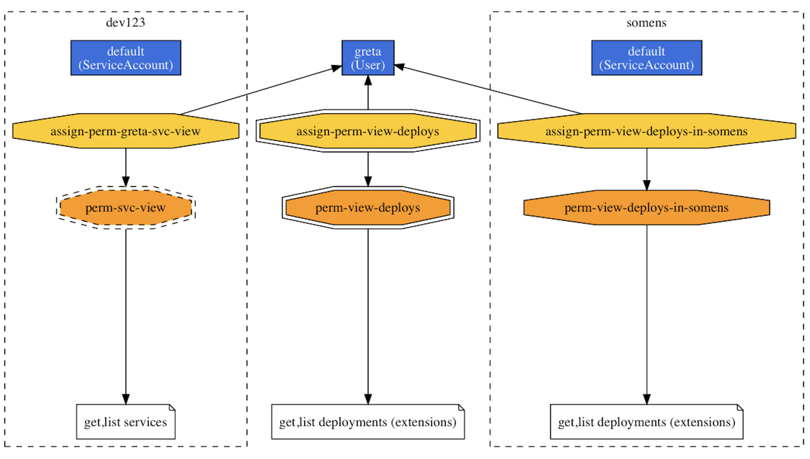

Base
Kubernetes RBAC can sometimes appear to be some sort of black magic. So, let's look behind the curtain.
Snippets¶
We all love YAML, right? Here's a collection of annotated RBAC-related YAML snippets you can build on.
Reuse roles¶
To re-use a role across namespaces, first define a cluster role, for example, to view services, using:
1 2 3 4 5 6 7 8 9 10 11 12 | apiVersion: rbac.authorization.k8s.io/v1 kind: ClusterRole metadata: name: perm-svc-view rules: - apiGroups: - "" resources: - services verbs: - get - list |
Assign above cluster role to user greta, allowing her to view services in the namespace dev123 using:
1 2 3 4 5 6 7 8 9 10 11 12 13 | apiVersion: rbac.authorization.k8s.io/v1 kind: RoleBinding metadata: name: assign-perm-greta-svc-view namespace: dev123 roleRef: apiGroup: rbac.authorization.k8s.io kind: ClusterRole name: perm-svc-view subjects: - apiGroup: rbac.authorization.k8s.io kind: User name: greta |
Tip
To validate if the permissions have been granted, have a look at checking for permissions.
Give namespace admin¶
Allow developer to deploy¶
Commands¶
Some kubectl commands that might come in handy.
Creating roles¶
To create a cluster role:
1 2 3 | kubectl create clusterrole perm-view-deploys \ --verb=get --verb=list \ --resource=deployments |
To create a role in namespace somens:
1 2 3 4 | kubectl create role perm-view-deploys-in-somens \ --verb=get,list,watch \ --resource=deployments \ --namespace=somens |
Creating role bindings¶
To create a cluster role binding, that is, assign a cluster role to user:
1 2 3 | kubectl create clusterrolebinding assign-perm-view-deploys\ --clusterrole=perm-view-deploys \ --user=greta |
To create a role binding, that is, assign role to user in namespace somens:
1 2 3 4 | kubectl create rolebinding assign-perm-view-deploys-in-somens \ --role=perm-view-deploys-in-somens \ --user=greta \ --namespace=somens |
Tip
If you just want to see what the YAML manifest would look like that the kuebctl command creates, that is, no create the resource, append -o yaml --dry-run to the respective command.
Checking for permissions¶
Can the user greta list services in the namespace dev123?
1 2 3 4 | $ kubectl auth can-i \ list services \ --as=greta \ --namespace=dev123 |
Can the service account dummy create services in the namespace danger?
1 2 3 4 | $ kubectl auth can-i \ create services \ --as=system:serviceaccount:danger:dummy \ --namespace=danger |
Visualize permissions¶
If you have rback installed:
1 2 3 4 5 | kubectl get sa,roles,rolebindings,clusterroles,clusterrolebindings \ --all-namespaces -o json | \ rback | \ dot -Tpng > /tmp/rback.png && \ open /tmp/rback.png |
Resulting in something like the following (note that only a small part of the overall graph is shown):
